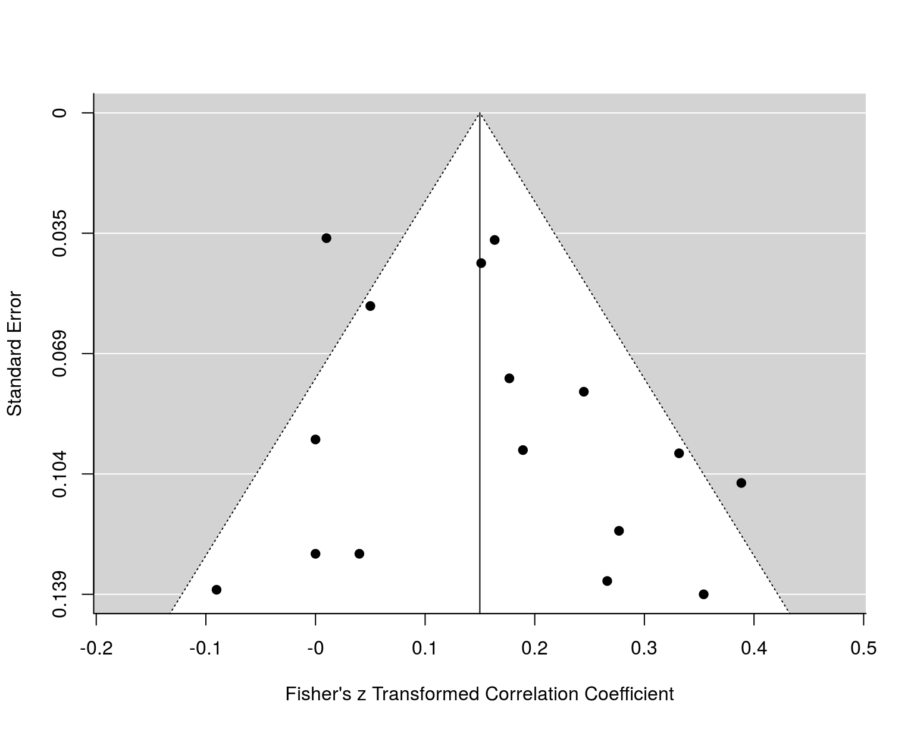

dat.molloy2014.RdResults from 16 studies on the correlation between conscientiousness and medication adherence.
dat.molloy2014
The data frame contains the following columns:
| authors | character | study authors |
| year | numeric | publication year |
| ni | numeric | sample size of the study |
| ri | numeric | observed correlation |
| controls | character | number of variables controlled for |
| design | character | whether a cross-sectional or prospective design was used |
| a_measure | character | type of adherence measure (self-report or other) |
| c_measure | character | type of conscientiousness measure (NEO or other) |
| meanage | numeric | mean age of the sample |
| quality | numeric | methodological quality |
Conscientiousness, one of the big-5 personality traits, can be defined as “socially prescribed impulse control that facilitates task- and goal-directed behaviour, such as thinking before acting, delaying gratification, following norms and rules and planning, organising and prioritising tasks” (John & Srivastava, 1999). Conscientiousness has been shown to be related to a number of health-related behaviors (e.g., tobacco/alcohol/drug use, diet and activity patterns, risky behaviors). A recent meta-analysis by Molloy et al. (2014) examined to what extent conscientiousness is related to medication adherence, that is, the extent to which (typically chronically ill) patients follow a prescribed medication regimen (e.g., taking a daily dose of a cholesterol lowering drug in patients with high LDL serum cholesterol levels). The results from the 16 studies included in this meta-analysis are provided in this dataset.
Variable a_measure indicates whether adherence was measured based on self-reports or a more ‘objective’ measure (e.g., electronic monitoring of pill bottle openings, pill counts). Variable c_measure indicates whether conscientiousness was measured with some version of the NEO personality inventory or some other scale. Methodological quality was scored by the authors on a 1 to 4 scale with higher scores indicating higher quality (see article for details on how this score was derived).
Molloy, G. J., O'Carroll, R. E., & Ferguson, E. (2014). Conscientiousness and medication adherence: A meta-analysis. Annals of Behavioral Medicine, 47(1), 92--101. https://doi.org/10.1007/s12160-013-9524-4
John, O. P., & Srivastava, S. (1999). The Big Five Trait taxonomy: History, measurement, and theoretical perspectives. In L. A. Pervin & O. P. John (Eds.), Handbook of personality: Theory and research (2nd ed., pp. 102-138). New York: Guilford Press.
### copy data into 'dat' dat <- dat.molloy2014 ### calculate r-to-z transformed correlations and corresponding sampling variances dat <- escalc(measure="ZCOR", ri=ri, ni=ni, data=dat, slab=paste(authors, year, sep=", ")) dat#> authors year ni ri controls design a_measure #> 1 Axelsson et al. 2009 109 0.187 none cross-sectional self-report #> 2 Axelsson et al. 2011 749 0.162 none cross-sectional self-report #> 3 Bruce et al. 2010 55 0.340 none prospective other #> 4 Christensen et al. 1999 107 0.320 none cross-sectional self-report #> 5 Christensen & Smith 1995 72 0.270 none prospective other #> 6 Cohen et al. 2004 65 0.000 none prospective other #> 7 Dobbels et al. 2005 174 0.175 none cross-sectional self-report #> 8 Ediger et al. 2007 326 0.050 multiple prospective self-report #> 9 Insel et al. 2006 58 0.260 none prospective other #> 10 Jerant et al. 2011 771 0.010 multiple prospective other #> 11 Moran et al. 1997 56 -0.090 multiple prospective other #> 12 O'Cleirigh et al. 2007 91 0.370 none prospective self-report #> 13 Penedo et al. 2003 116 0.000 none cross-sectional self-report #> 14 Quine et al. 2012 537 0.150 none prospective self-report #> 15 Stilley et al. 2004 158 0.240 none prospective other #> 16 Wiebe & Christensen 1997 65 0.040 none prospective other #> c_measure meanage quality yi vi #> 1 other 22.00 1 0.1892 0.0094 #> 2 NEO 53.59 1 0.1634 0.0013 #> 3 NEO 43.36 2 0.3541 0.0192 #> 4 other 41.70 1 0.3316 0.0096 #> 5 NEO 46.39 2 0.2769 0.0145 #> 6 NEO 41.20 2 0.0000 0.0161 #> 7 NEO 52.30 1 0.1768 0.0058 #> 8 NEO 41.00 3 0.0500 0.0031 #> 9 other 77.00 2 0.2661 0.0182 #> 10 NEO 78.60 3 0.0100 0.0013 #> 11 NEO 57.20 2 -0.0902 0.0189 #> 12 NEO 37.90 2 0.3884 0.0114 #> 13 NEO 39.20 1 0.0000 0.0088 #> 14 other 69.00 2 0.1511 0.0019 #> 15 NEO 46.20 3 0.2448 0.0065 #> 16 NEO 56.00 1 0.0400 0.0161### meta-analysis of the transformed correlations using a random-effects model res <- rma(yi, vi, data=dat) res#> #> Random-Effects Model (k = 16; tau^2 estimator: REML) #> #> tau^2 (estimated amount of total heterogeneity): 0.0081 (SE = 0.0055) #> tau (square root of estimated tau^2 value): 0.0901 #> I^2 (total heterogeneity / total variability): 61.73% #> H^2 (total variability / sampling variability): 2.61 #> #> Test for Heterogeneity: #> Q(df = 15) = 38.1595, p-val = 0.0009 #> #> Model Results: #> #> estimate se zval pval ci.lb ci.ub #> 0.1499 0.0316 4.7501 <.0001 0.0881 0.2118 *** #> #> --- #> Signif. codes: 0 ‘***’ 0.001 ‘**’ 0.01 ‘*’ 0.05 ‘.’ 0.1 ‘ ’ 1 #>#> #> pred ci.lb ci.ub pi.lb pi.ub #> 0.149 0.088 0.209 -0.037 0.325 #>### forest plot forest(res, addpred=TRUE, xlim=c(-1.6,1.6), atransf=transf.ztor, at=transf.rtoz(c(-.4,-.2,0,.2,.4,.6)), digits=c(2,1), cex=.8, header="Author(s), Year")